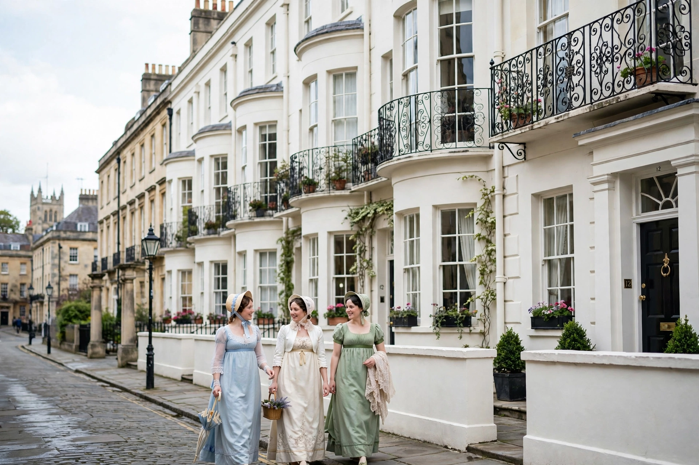

Regency era
From Wikipedia, the free encyclopedia
| Regency era | |
| Period | 1811–1820 (formal Regency); often extended c. 1795–1837 |
|---|---|
| Regent | George, Prince of Wales (later George IV) |
| Monarch | George III |
| Preceded by | Georgian era |
| Followed by | Victorian era |
| Hallmarks | Regency architecture, Jane Austen's novels, Beau Brummell, Brighton Pavilion |

A Regency terrace: the era's distinctive white stucco architecture
The Regency era of British history is commonly understood as the period from 1811 to 1820, when King George III's mental illness led his eldest son, George, Prince of Wales, to rule as Prince Regent. In cultural history the term is often extended to cover roughly 1795–1837, spanning the last years of George III, the regency and reign of George IV, and the reign of William IV, between the Georgian mainstream and the Victorian age.
Politics and society
The era covered the final phase of the Napoleonic Wars, ending with Waterloo in 1815, and the post-war years brought economic distress, radical agitation and repression — the Peterloo Massacre (1819) and the Cato Street Conspiracy (1820). Society was sharply stratified: a small aristocratic elite enjoyed a brilliant social season of balls, clubs and gambling, while industrialisation transformed the lives of the urban working class.
Culture
The period is remembered for distinctive elegance in fashion, architecture and manners: high-waisted muslin dresses for women, the dandyism of Beau Brummell for men, John Nash's terraces and the Prince Regent's Royal Pavilion at Brighton, and the spa-town culture of Bath. In literature it produced Jane Austen's novels (published 1811–1818), the poetry of Byron, Shelley and Keats, the historical novels of Walter Scott, and the paintings of Turner and Constable.
Legacy
The Regency has an enduring popular image through Austen adaptations and "Regency romance" fiction, a genre popularised by Georgette Heyer. George IV's death in 1830 and William IV's in 1837 closed the period, succeeded by the accession of Queen Victoria.